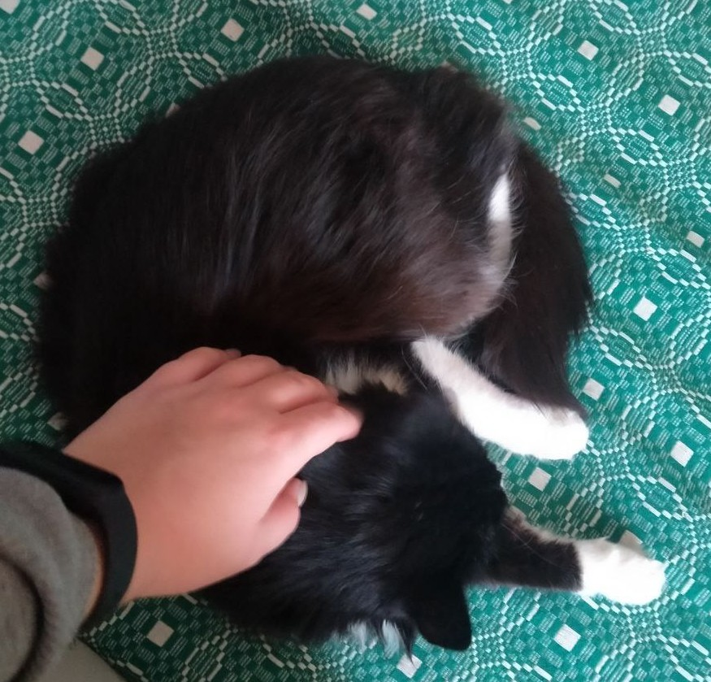

Мой любимый питомец - кошка
На паре было сказано, что можно взять любую тему для сайта, хоть портфолио для Барсика. Барсика у меня нет, поэтому сайт про то, какие бывают Барсики

На паре было сказано, что можно взять любую тему для сайта, хоть портфолио для Барсика. Барсика у меня нет, поэтому сайт про то, какие бывают Барсики
Ко́шка — домашнее животное, одно из наиболее популярных «животных-компаньонов». С точки зрения научной систематики, домашняя кошка — млекопитающее семейства кошачьих отряда хищных. Одни исследователи рассматривают домашнюю кошку как подвид дикой кошки, другие — как отдельный биологический вид. Являясь одиночным охотником на грызунов и других мелких животных, кошка — социальное животное, использующее для общения широкий диапазон звуковых сигналов, а также феромоны и движения тела. В настоящее время в мире насчитывается около 600 млн домашних кошек, выведено около 200 пород, от длинношёрстных (персидская кошка) до лишённых шерсти (сфинксы), признанных и зарегистрированных различными фелинологическими организациями.
1. Кошки могут прыгать на высоту, превышающую их собственную длину в шесть раз, благодаря мощным задним лапам, которые позволяют им совершать невероятные прыжки.
2. У кошек есть 32 мышцы, управляющие каждым ухом, что позволяет им поворачивать их на 180 градусов для лучшего улавливания звуков. Кошки могут улавливать звуки частотой до 65 000 Гц, что позволяет им слышать ультразвук.
3. Около 70% своей жизни кошки проводят во сне, что эквивалентно примерно 13–16 часам в сутки.
4. Нос у кошек имеет уникальный рисунок, подобный отпечаткам пальцев у людей, и не существует двух кошек с одинаковыми носами.
5. Мурлыканье – это не просто признак удовольствия; оно также помогает кошкам успокаиваться и даже может способствовать восстановлению тканей.
На самом деле всё очень просто. У меня аллергия на шерсть. Не могу находиться с домашними животными дольше пяти часов. А очень хочется!
Главной кошечкой моей жизни наверное навсегда останется кошка бабушки - Графчик. Спасибо за проведеное дество со мной ❤️
